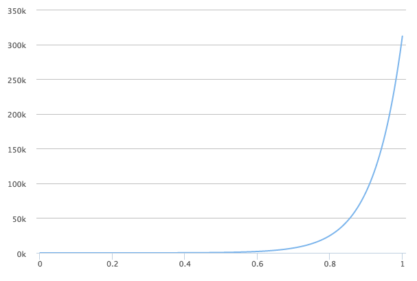

DATA INTUITIVE
Company
Solutions
Viash
ComPass
Services
Insights
Connect
Contact Us
Book a Meeting
Careers
Blog Posts
anndata: annotated data in R
Porting anndata to R with reticulate.
anndata
is a commonly used Python package for keeping track of data and learned…
Feb 2, 2021
Robrecht Cannoodt
DiFlow
Developing and maintaining pipelines/workflows can be a genuine challenge. Doing this in a collaborative…
Dec 15, 2020
Toni Verbeiren
A Practical Approach to Model Error - Part 2
It’s been a while since I first wrote about tackling model error using a simple model. It’s about time to come back to it.
Sep 6, 2018
Toni Verbeiren
Viz and Math in Apache Zeppelin
For some years, I have been going back an forth between Spark-Notebook and Apache Zeppelin for different use-cases. Already 2 years ago, I made a little comparison of the two…
Oct 27, 2016
Data Intuitive at Spark Summit 2016
No, I’m not at the spark summit in Brussels. Time is not on my side, too much things to do.
Oct 26, 2016
Bullet Proof Data Science in Scala
How to use Scala/Spark in such a way that user or machine errors lead to minimal harm?
Jun 25, 2016

A Practical Approach to Model Error
In this post, I want to get a better sense of the effects of model error by simulating a very simple model for the spreading of a virus. It’s based on an analysis…
May 12, 2016
Thoughts on the Spark Summit Europe 2015
In this…
Oct 29, 2015
Code Snippet Repository
I’m jumping between Scala/Spark coding, some Javascript in between, Python/PySpark and then some R every now and then. This in itself is already a…
May 29, 2015
Toni
Transposing a Spark RDD
I have been using Spark quite a lot for the last year. At first using the Scala interface, but lately more using the Python one.
Jan 15, 2015
Toni
Writing Workflow and Reproducible Data Analysis
I’ve been writing about my writing workflow before. Since some aspects of it are related to reproducible research and especially reproducible data analysis, I have collected some…
Sep 24, 2014
Toni
Impact in Risk Assessment
How many times have…
Sep 23, 2014
Toni
Publishing html presentations on Github
You’ve seen those fancy html presentations on the web? Reveal.js is a framework to create such things of beauty. And it goes along well with my Markdown based style of writing, even…
Jul 10, 2014
Toni
Running Docker on MacOSX
I found out about docker this morning via the blog of the people behind AMPlab, creators of Spark and such. In short…
Nov 25, 2013
Toni
Turning Cloudera Quickstart VM into an R Studio Server
Downloading the image (in my case for VirtualBox) is easy enough. Make sure that the VM has a connection to the internet.
Aug 16, 2013
Toni
Writing workflow: Markdown, Pandoc, LaTeX and the likes
You wouldn’t tell from…
Jun 24, 2013
Toni
SLM: Issues with traditional SLM (Part 7)
When all goes wrong, and the KPIs are showing bad performance, there is one last option: avoid accountability. For instance, because other…
Jan 25, 2013
Toni
SLM: Issues with traditional SLM (Part 6)
We start by considering metric 1 in the examples given before, which is related…
Jan 23, 2013
Toni
SLM: Issues with traditional SLM (Part 5)
A consequence of dealing with averages and aggregate…
Jan 21, 2013
Toni
SLM: Issues with traditional SLM (Part 4)
Consider the following (fake) recommendation for a hotel room:
Jan 18, 2013
Toni
Example of SLM issue
This morning, I stumbled upon the following tweet:
Jan 18, 2013
Toni
SLM: Issues with traditional SLM (Part 3)
Considering further some aspects of (traditional) SLM that should be fixed.
Dec 6, 2012
Toni
SLM: Issues with traditional SLM (Part 2)
In our series of posts concerning…
Dec 5, 2012
Toni
SLM: Issues with traditional SLM (Part 1)
We introduced some basic aspects of SLM in the previous posts. We now turn to a list of issues with traditional Service Level Management.
Dec 4, 2012
Toni
SLM: Introduction (part 4)
We introduced the service level in a previous post. A Service Level can be defined/calculated for one service or a set of services.
Dec 4, 2012
Toni
SLM: Introduction (part 3)
As mentioned before, lots of data points…
Nov 20, 2012
Toni
SLM: Introduction (part 2)
In the…
Nov 19, 2012
Toni
SLM: Introduction (part 1)
We start this introduction with some examples of traditional metrics for measuring performance.
Nov 16, 2012
Toni
Service Level Management: The Series
Service Level Management (SLM) is the practice of managing the service level and making sure its compliant with the level agreed with customers[1]. As indicated by the word
le…
Nov 15, 2012
Toni
Rational Decision Making in Business?
In business contexts, generally speaking, we believe we act as rational beings. The rise of Business Intelligence and the wonders of Number Crunching and Big Data make us believe we have entered the era of rational…
Sep 25, 2012
Toni
Choosing the right Cover Photo
Say you are the editor in chief of a magazine and you have to decide among two possible…
Sep 18, 2012
Toni
Fight against Tax Fraud in Belgium
The (brand new) Belgian government has decided to raise the stakes in the fight on tax fraud. That’s a good thing, especially in times of tight government budgets.
Jan 25, 2012
Toni
Infografiek
There’s a new word in the Dutch language:
infografiek
. It’s clearly derived from the English
infographic
. If this is a trend, it’s only the start. FlowingData has a ni…
Jan 17, 2012
Toni
The Economist on Corporate Governance
In his article for The Economist, Schumpeter argues…
Mar 15, 2011
Toni
Comments on Johan Bollen’s stock market predictions
You could not escape the news, even if you wanted to. The paper is published on Arxiv.org. It’s a typical example of what our book will be about.
Oct 26, 2010
Toni
Open Letter to Data Scientists
I share your passion for data, visualization, design, information, etc. Hell, I do. The same way I share the…
Oct 19, 2010
Toni
Happy with the current result…
After about 2 hours of hacking WordPress, I’m happy with the result. I got the original look and feel back and from a functionality point of view it offers what I need.
Oct 19, 2010
Toni
WordPress it will be…
I’ve tried Drupal. It failed me, or I failed
it
. More about the reasoning behind the step later, right now I have tweaking, configuration and theming to do…
Oct 19, 2010
Toni
Using a hammer to paint the wall (part 1)
It doesn’t make sense, does it? Using a hammer to paint a wall? No, it doesn’t, because we know what a hammer looks like and we all know what it takes to paint a wall.
Mar 11, 2010
Toni
Life Expectancy: Does my Insurance Company know about This?
In the previous post about life expectancy, we looked at some data of the…
Feb 24, 2010
Toni
Life Expectancy: The difference between male and female
In this post on FlowingData, some interesting statistics are shown about life expectancy in the US.
Feb 18, 2010
Toni
How to cope with change: An alternative approach
CHANGE…
Jun 19, 2009
Toni
A new project…
Long time ago… I used to blog every now and then. It used to be about technology.
Apr 18, 2009
Toni
Why Personal Productivity may be Hard and ‘The Corporation’ has the answer
Eli has drawn my attention to ‘The Corporation’. Shame on me for not knowing and having seen this documentary before (1).…
Nov 26, 2008
Toni
How to Measure Productivity?
A comment by reader ‘rbis’ on my previous article about the definition of productivity refers to the website and blog of productivity guru Matthew Cornell. The reference reminded me of an article by Matt in which…
Sep 15, 2008
Toni
Definition of Productivity
I’ve always…
Sep 12, 2008
Toni
VMware vscsiStats: The paper
I wrote about vscsiStats before, but it seems I was amongst the first to do so. Luckily, one of the creators has put some more info on his blog. In this post, he refers to his…
Apr 3, 2008
Toni
Capacity Monitoring for Desktops?
With the rise of VDI (Virtual Desktop Infrastructure, see here for a comprehensive overview) and the momentum it has, one starts to ask similar questions as with conventional server consolidation: what type of virtualization platform is…
Jan 8, 2008
Toni
Chargeback
On the VMworld website, you can find a featured presentation concerning chargeback.…
Jan 2, 2008
Toni
Performance Monitoring: Correlations
Although I have been arguing that performance monitoring and capacity planning require a decent server montoring environment, it also requires more. This extra part comes…
Dec 17, 2007
Toni
Performance Monitoring: More about Peaks
In a previous post, we talked about averages (types of averages) and peaks and how peaks can tell you something about the spreading (variance, standard deviation) of the data.
Dec 17, 2007
Toni
Performance Monitoring: Averages and Peaks
Now that we are into the topic of performance (of capacity)…
Dec 14, 2007
Toni
Capacity Planning: What to monitor and how to interpret
Capacity planning starts with capacity (of performance) monitoring.
Dec 14, 2007
Toni
Word vs. Excel
I stumbled upon the iWork suite (aka Office for Mac) already some time ago, but today thought back of it as I was thinking about Excel and Word…
Nov 21, 2007
Toni
VMware Capacity Planner: taking the data offline (Part 2: Cygwin & wget)
I started thinking about avoiding the manual exports from the VMCP website and remembered I used WGET in the past for this kind of stuff. The difference with before was that this…
Oct 26, 2007
Toni
VMware Capacity Planner: taking the data offline (Part 1: Introduction)
Lately…
Oct 25, 2007
Toni
File Versioning
File versioning is something I have been interested in since I started out doing…
Sep 17, 2007
Toni
To use the mouse or not?
Some time ago, I installed Enso (http://www.humanized.com) and fell in love with the easy and fast way of working. Tools like this can really give your productivity a boost. There is one disadvantage for poor consultants like me…
Jun 15, 2007
Toni
No matching items
Back